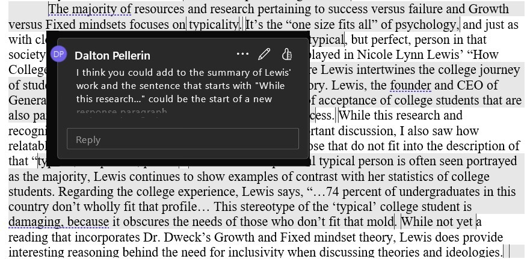
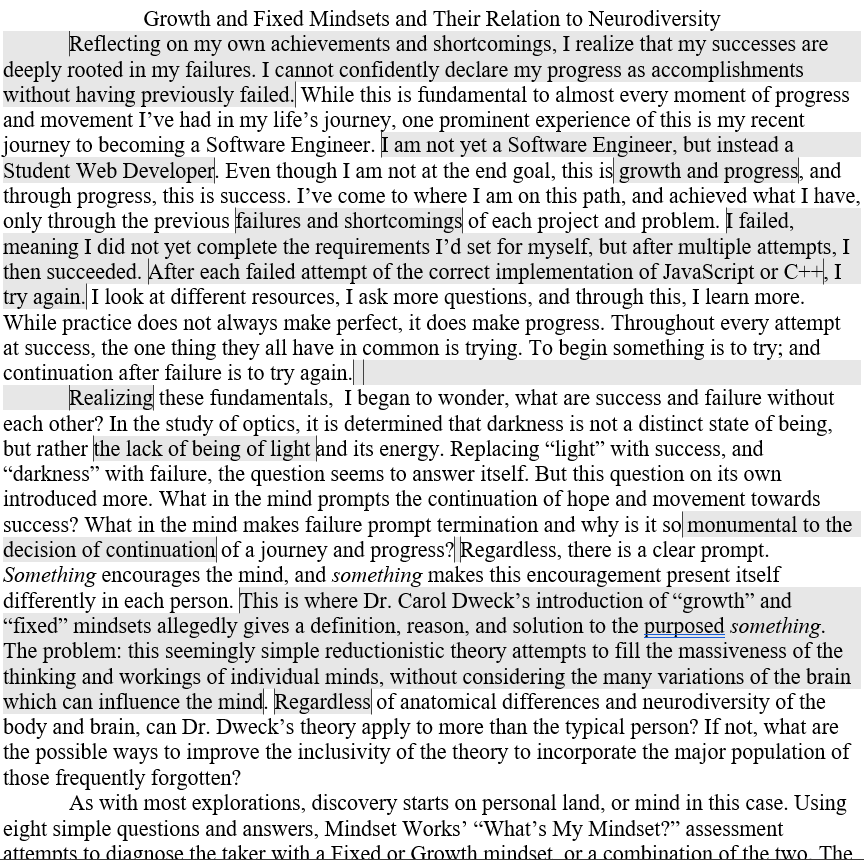
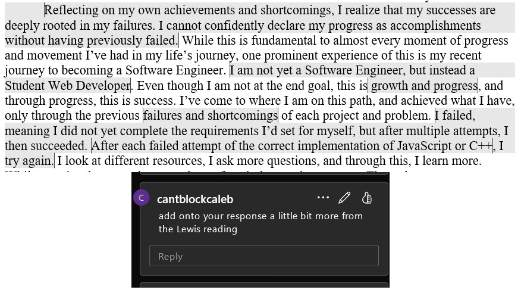
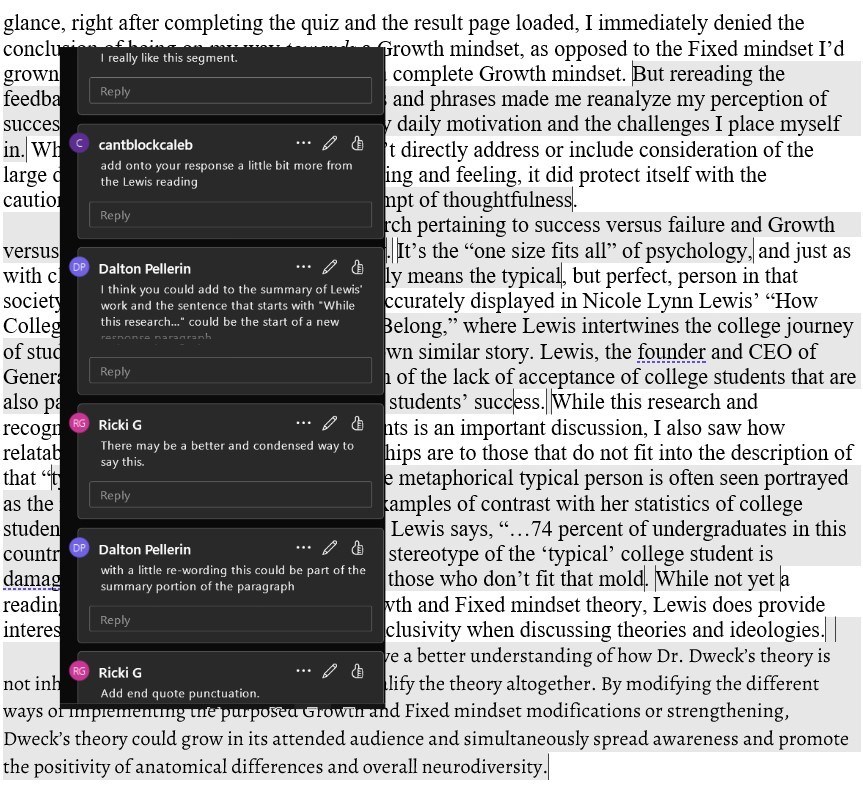

"Growth and Fixed Mindsets: Exploring Their Relation to Neurodiversity" explores the concept of Dr. Carol Dweck's mindset theory and whether or not it can fairly and accurately be applied to not only neurodiverse individuals, but all persons with disabilities. As an exploratory essay with a delayed thesis, two questions were introduced in the beginning and were continuously explored throughout the summaries of multiple sources and the responses to them.
Reflecting on my own achievements and shortcomings, I realize that my successes are deeply rooted in my failures. I cannot confidently declare my progress as accomplishments without having previously failed. While this is fundamental to almost every moment of progress and movement I've had in my life's journey, one prominent experience of this is my recent journey to becoming a Software Engineer. I am not yet a Software Engineer, not yet able to master more than web-based development—instead, I am a Student Web Developer. Even though I am not yet at my end goal, the ability to create websites within a week is an example of my growth and progress. Having begun not knowing the words or the definitions that are fundamental to my study, to understanding and explaining them, this can now be called progress—and because this is progress, it is also success. I've come to where I am on this path, and achieved what I have, only through the previous failures of each attempt to complete a goal. I failed, meaning I did not yet complete the requirements I'd set for myself, but after multiple attempts, I then succeeded. After each failed attempt of the correct implementation of JavaScript or C++, I try again. I look at different resources, I ask more questions, and through this, I learn more. While practice does not always make perfect, it does make progress. Throughout every attempt at success, the one thing they all have in common is trying. To begin something is to try; and continuation after failure is to try again.
Realizing these fundamentals, I began to wonder: What in the mind prompts the continuation of hope and movement towards success? What in the mind makes failure prompt termination and why is it so monumental to the decision of continuation of a journey and progress? Regardless, there is a clear prompt. Something encourages the mind, and something makes this encouragement present itself differently in each person. This is where Dr. Carol Dweck's introduction of "growth" and "fixed" mindsets allegedly gives a definition, reason, and solution to the proposed something. The problem: this seemingly simple reductionistic theory attempts to fill the massiveness of the thinking and workings of individual minds, without considering the many variations of the brain which can influence the mind. With recognition of neurodiversity, can Dr. Dweck's theory apply to more than the conventional person? If not, what are the possible ways to improve the inclusivity of the theory and incorporate those often overlooked?
As with most explorations, discovery starts on personal land, or mind in this case. Using eight simple questions and answers, Mindset Works' "What's My Mindset?" assessment attempts to diagnose the taker with a Fixed or Growth mindset, or a combination of the two. The short quiz offers six possible choices, beginning with "Disagree A Lot," and it decreases in certainty before increasing in agreement to "Agree A Lot." The assessment prompts responses to questions about the takers view on intelligence, whether it can grow and strengthen or if it is static and unchanging. Afterwards, the questions focus on how the taker responds to the different difficulties of work. It prompts critical thinking on how someone embodies the outcomes of their attempts and how that can affect their attitude towards further work and challenge.
After taking the assessment, I was not given an exact answer of either Fixed or Growth, but rather a mixture. In the assessment feedback, Mindset Works said, "You are moving toward a growth mindset, but there may be a few ideas holding you back from achieving all that you are capable of doing." While the length of the quiz gave away the lack of reliability and credibility of the results, the feedback is generous with its use of cautionary words that allow room for disagreement (probably, could, may, and if) without putting itself at risk of criticism. At first glance, right after completing the quiz and the result page loaded, I immediately denied the conclusion of being on my way towards a Growth mindset, as opposed to the Fixed mindset I'd grown to know, or the optimistic hopes of having already matured into a Growth mindset. But rereading the feedback and noticing the cautionary words and phrases made me reanalyze my perception of success and failure, and how that affects my daily motivation and the challenges I place myself in. Those words and their allowance for disagreement had me analyzing if and how the questions and the results could have been affected by my neurodiversity. While Mindset Works' assessment didn't directly address or include consideration of the large diversity that can affect ways of thinking and feeling, it did protect itself with the cautionary words which added a mock attempt of thoughtfulness.
Being neurodivergent and having a physical disability has resulted in me being wary of opinions involving growth in abilities and how inability should be viewed as a problem to be eventually solved. The majority of resources and research pertaining to "success versus failure" and "Growth versus Fixed mindsets" focuses on typicality. It's the "one-size-fits-all" of psychology, and just as with clothes, this is always false as "all" only means the societal archetype. As for those that do not fit into the archetype, they are often ignored, suppressed, and concealed. To evade these outcomes, some individuals try to conform to societal expectations. While some succeed in outwardly appearing to fit the mold, in my experience, the repercussions of this conformity can be detrimental to mental, emotional, and physical health.
The proliferation of this negative impact is accurately displayed in Nicole Lynn Lewis' "How Colleges Tell Student-Parents They Don't Belong." Lewis intertwines the college journey of student-parent Yoslin Amaya with her own similar story, revealing the detrimental effects of the notion and how it can quickly cascade. Lewis, the founder and CEO of Generation Hope, explores the phenomenon of the lack of acceptance of college students that are also parents, and the impact it has for those students' success. While this research and recognition of the struggles of student-parents is an important discussion, I also saw how relatable the mentioned struggles and hardships are to those that do not fit into the confines of yet another mold. While the metaphorical typical person of the archetype is often seen portrayed as the majority, Lewis continued to show examples of contrast with her statistics of college students. Regarding the college experience, Lewis said, "…74 percent of undergraduates in this country don't wholly fit that profile… This stereotype of the 'typical' college student is damaging, because it obscures the needs of those who don't fit that mold." When expecting everyone to fit the exact circumstances of a typical person, the majority of people are not represented. Exclusions of something seemingly small, such as recognition, can have consequences that cascade into major complications for those unthought of.
In another parallel I found between Lewis' depiction and the exclusion of the neurodiverse, Lewis described the ways of indirect oppression. Lewis said, "Sometimes the hurdles were subtle… Other times, the hurdles were so significant that they threatened my ability to stay enrolled." Her descriptions of the challenges that come with someone attempting to survive in an environment that is not equipped for them, are easily recognizable. She described the fear of revealing information to her professors as it had the possibility of compromising her opportunities of education. Adding to her fear of disclosing her identity of being a parent, Lewis said, "…the culture made clear that being a parent was an inconvenience that would not be accommodated." Her experience isn't relatable to only neurodiverse individuals, but to all people with disabilities, including myself. Discrimination of this type shows particularly in the workforce, as any mention or notice of differences can be seen as "undue hardship for the company." This view of hardship could hinder being hired during the interviewing process and keeping stable employment if hired. Even after securing a job, there is no guarantee that the employer won't find a way to work around the Americans with Disabilities Act and dismiss the employee.
Regarding expected typicality, Lewis' article assessing the college environment seems to be a direct contrast to Mindset Works' mindset assessment. Where Lewis offers criticism to society only offering opportunities to a select few, Mindset Works did the opposite by promoting and participating in the notion of "one-size-fits-all." Mindset Works didn't present itself to have deliberately shown apparent disregard of those with diversities, but it did participate in the common ignorance of society. Even slight disregard and ignorance can quickly grow, leaving some of society's most vulnerable population without life-changing opportunities they could have seized with simple respect and acknowledgement of their existence. Both Lewis' criticism and Mindset Works' forgetfulness show the importance of questioning Dr. Dweck's Growth and Fixed mindset. Dweck's theory is so widespread and is frequently taught to present and future educators as advice on how to better help their students. School is one of the first places that a child, and the adults around them, begin to realize the differences between them and other children. Because of this, the importance of recognition and inclusion in a widely promoted teaching method that is seen as a "solution," becomes dire.
While Lewis sheds light on the challenges faced by underrepresented groups, particularly student-parents in the college environment, Surbhi Sachdev reiterates Dweck's theory by emphasizing the role of confidence in reshaping one's mindset and overcoming obstacles. In her Ted Talk, "The Power of a Growth Mindset", Sachdev focused on changing a mindset through confidence. She argued that the main hindrance preventing people from achieving their vision of success, is the lack of confidence and belief in self. After a brief mind exercise with the audience, Sachdev used the resulting conclusion to say, "…as individuals, we have a natural tendency to remain within our comfort zone." At the beginning of her presentation, she instructed the audience to raise their hands as high as they could, and then proceeded to ask them to raise their hands even higher. Despite being instructed to do so the first time, most of the audience were able to stretch their arms higher. To the phenomenon of people not performing to the best of their abilities, Sachdev said, "…this is not about our mindset… it's all about changing our mindset and how do we find that confidence back and how do we overcome those obstacles." She then went on to share her personal experience of the journey it took to eventually achieve her life's dreams. Her main point throughout the presentation is to admit to what she viewed as failures and setbacks, and to attribute them all to her limited mindset. Sachdev used her journey of going from Miss India Worldwide, to a dead-end job in administration, to forcing herself beyond what she was comfortable with and achieving her dreams and more.
Surbhi Sachdev almost made it sound easy. The first time I watched her presentation, I was impressed with all she'd achieved in less than a decade—and all through changing her mindset. While Sachdev avoids using the label of Growth mindset, her speech advocates for the adoption of the aspects associated with it. Her encouragement to expand beyond what is comfortable and known, is inspirational to those that have the choice in doing so. But as with Mindset Works' assessment, Sachdev did not account for those that don't have the choice to go beyond. I will give credit where it's due and say that her presentation was very motivating to try harder. It filled my mind with images of dreams long forgotten, hopes and wishes to shooting stars, and life plans written in crayon. The remembrance of those pleasures faded back into the box they came from when Sachdev concluded with, "…remember, what you truly believe is what you can achieve." I returned to where I am now and realized I can believe I can do anything, but that doesn't change the fact that I am physically incapable of achieving those beliefs.
So far, all of the sources have promoted Growth mindsets rather than Fixed, and now, finally I question the meaning and origin of the concept of Growth and Fixed mindsets. It's clear that these terms, or behaviors, are promoted as a path to success, but what does it mean to Dr. Carol Dweck, the psychologist who coined the term?
In her article "Even Geniuses Work Hard," Dr. Dweck described her studies of how people learn and how it could help school-aged children. She presented the two mindsets and their differences, explaining, "Individuals with a fixed mindset believe that their intelligence is simply an inborn trait… In contrast, individuals with a growth mindset believe that they can develop their intelligence over time." To apply this to students, Dweck observed how they responded to challenges. Students that maintained their determination to solve challenging problems after initially struggling or failing, were identified as having Growth mindsets. In contrast, the students that did the opposite and instead avoided situations that might have made them struggle, were said to have Fixed mindsets. Throughout the article, those that wanted to continue work after setbacks, and therefore continue learning, were seen as the model students. In order for students to perform their best, Dweck urged teachers to incorporate encouragement of challenge into their classrooms. Concluding her article, she emphasized the importance of fostering a Growth mindset environment to bestow the students with the willingness to work through challenges and continue towards success.
As I read Dweck's article, I began to wonder whether she initially intended to explore only two mindsets in her research or if the discovery of these two mindsets shaped her narrative. Regardless, it raised additional questions about the breadth of her theory's applicability. Dweck's article focuses on the optimistic idea that anything can be achieved with the right mindset. This brings forth my first question: "Can Dr. Dweck's theory apply to more than the conventional person?" Notably, Dweck's research didn't explicitly mention whether any of the children studied were neurodivergent or had any other disabilities, suggesting a potential oversight or omission in addressing this crucial aspect. When conducting a study involving a diverse group of children and subsequently advocating for the application of the findings, the importance of inclusion becomes a major consideration. While I don't believe this was intentional, this oversight appears to be an aspect that might have warranted attention from a researcher and psychologist. Like the mindset assessment and the approach found in Sachdev's presentation, Dweck conveys a "can-do" attitude and promotes the ability to achieve anything if enough effort is applied.
A possible challenge and improvement to the "one-size-fits-all" mentality present in Dweck's theory could be found in Lisa Blackwell's article, "You Can Grow Your Brain." In contrast to the other articles, Blackwell presented evidence that the brain grows. While this information could possibly support Dweck's mindset theory, it also emphasizes the faults. Blackwell relates the brain to a muscle, saying, "It changes and gets stronger when you use it." She explained that neurons have the ability to grow and get stronger when someone learns new skills—the continuation of learning a new skill results in a stronger brain each time, meaning that performing the new skill gradually gets easier. Because of the constant growth a child's body does, it was previously thought that only children's brains could grow. But, with the help of studies of different animals and the human brain, it was found that an adult human's brain can and does also grow. Scientists explored this by performing a study of brain activity in adults who practiced a new skill and those that didn't. The study involved teaching Group I how to perform a skill while Group II remained untrained and unable to do the skill. Afterwards, the scientists compared brain scans of the two groups and found that Group I had greater brain activity, and therefore growth, in the visual and motor areas than Group II.
When relating Group I's brain activity growth to the ability of growth in other skills, Blackwell continued, "But it's not just about effort. You also need to learn skills that let you use your brain in a smarter way." She reiterated that the same applies to skills growth such as learning math. Just as Group I was unable to correctly perform the skill but eventually got better over time, those that deny their ability to learn math could also grow their brain. While Blackwell focuses on the claim that everyone can grow and improve a skill with practice, she clarifies, "This means that it's not just how much time and effort you put in to studying math, but whether when you study, you learn something new and hard." If the brain can physically grow and change, as this information suggests, it raises the question: In the physical sense, does everyone have the opportunity for growth in abilities and knowledge?
Blackwell's article was different from the others, focusing less on the mentality of a growth mindset, but instead on the physical implications learning can have. Her article repeatedly restated that the brain physically grows with implementation and exercise of a new skill. Where the other articles and presentations were on the edge of, "I did it and so can you," Blackwell incited further thought into being able to master a new skill. I took note of her insistence to use words like "skills" rather than "abilities." These two words may be used interchangeably, they have distinct meanings. A person can acquire a skill by continuously practicing the correct methods, but first that person must have the ability to perform the methods. An ability isn't something that is typically gained but instead something that is natural and inherent. In an obvious example, someone with two legs can learn to run a sprint by enhancing their running ability, while someone without legs cannot naturally enhance their running ability and therefore cannot naturally acquire the skill to run faster.
I purposely used the word "naturally" in respect for the many accommodations that may be accessible to a person with disabilities. At the end of her article, Blackwell said, "Sometimes it even hurts! But when you feel yourself get better and stronger, you realize that all the work is worth it!" Her statement could easily be taken the wrong way, but it's important to remember that Blackwell is specifically speaking of skills, rather than abilities. Concluding my search for answers with Blackwell's article proved to be fruitful in tempting me to reevaluate my initial processing of the previous sources. Where I'd previously judged the works of Mindset Works, Sachdev, and Dweck as being too bland and rigid, Blackwell's, "You Can Grow Your Brain" offered information that supported all the claims. Mindset Works' mindset assessment and Sachdev's presentation speak of skills rather than abilities. They encourage a change in the way a person approaches challenges and new skills, advising people to be more open and positive towards new opportunities and growth.
Viewing the sources in this new light caused me to, again, rethink my results from Mindset Works', "What's My Mindset" assessment. "You are moving toward a growth mindset, but there may be a few ideas holding you back from achieving all that you are capable of doing," the assessment feedback had said. It later stated, "A growth mindset is something that you can develop." As Dweck had clarified, the terms "Fixed" and "Growth" refer to a person's beliefs regarding the statis of their intelligence. Combining these with Blackwell's confirmation of brain activity and strengthening, I can narrow my view of my assessment of personal skills to exclude my abilities. Instead of reading the assessment feedback as being ignorant and dismissive of my abilities and limitations, I can read it as an encouragement of skills.
While often left unspoken, Growth and Fixed mindsets refer to skills. I'd asked, "Regardless of neurodiversity, can Dr. Dweck's theory apply to more than the conventional person?" and to that I found that the answer depends on how the theory is implemented. In a more negative than positive light, the terms are indifferent to abilities and don't necessarily apply to more than the conventional society archetype of a person. I find this primarily negative because it runs the very probable risk of sending an ill-informed message that any skill and ability can be gained with work and dedication. This invites discrimination against those who do not have the ability and do not have the accommodations to gain it. But Dweck's theory's lack of inherent inclusion could also be positive. It keeps a light note and provides inspiration and chance to those that are discouraged with their lack of progress and growth in a skill.
My second question serves as a response to the prompt of the first: "If not, what are the possible ways to improve the inclusivity of the theory and incorporate those often overlooked?" In relation to the negative of Dweck's theory, while these ambitious attitudes do not inherently include abilities, they don't exclude them either. To improve inclusivity, the application of Growth and Fixed mindsets could benefit from definitive distinction. When teaching and spreading the simplified distinction of how people approach intelligence, it should be strictly clarified that terms such as mindset, confidence, develop, and effort refer to skills rather than abilities.
Overall, after reviewing these sources, I understand Dr. Dweck's theory is not inherently inclusive but that doesn't disqualify the theory altogether. By modifying the different ways of implementing the proposed Growth and Fixed mindset modifications or strengthening, Dweck's theory could grow in its intended audience and simultaneously spread awareness and promote the positivity of not only neurodiversity, but of all diversities of the mind, body, and brain.
Blackwell, Lisa. “You Can Grow Your Brain.” Health and Science. Blackboard, uploaded by Instructor Jennifer Atkins-Gordeeva, Fall 2023, https://bb-pulaskitech.blackboard.com/ . Accessed 7 Nov. 2023.
Dweck, Carol. “Even Geniuses Work Hard.” ASCD, vol. 68, no. 1, 1 Sep. 2010, https://www.ascd.org/el/articles/even-geniuses-work-hard . Accessed 7 Nov. 2023.
Lewis, Nicole Lynn. “How Colleges Tell Student-Parents They Don't Belong.” UA-PTC Composition Mix, 2e, E-book, Norton, 2023, pp. 72-74. Accessed 7 Nov. 2023.
Sachdev, Surbhi. “The Power of a Growth Mindset.” YouTube, uploaded by TEDx Talk, 1 Feb. 2019, https://www.youtube.com/watch?v=FpN1yQap_is . Accessed 7 Nov. 2023.
“What's My Mindset?” Mindset Works, 2015, https://blog.mindsetworks.com/what-s-my-mindset . Accessed 24 Oct. 2023.
"Growth and Fixed Mindsets: Exploring Their Relation to Neurodiversity" explores the concept of Dr. Carol Dweck's mindset theory and whether or not it can fairly and accurately be applied to not only neurodiverse individuals, but all persons with disabilities. As an exploratory essay with a delayed thesis, two questions were introduced in the beginning and were continuously explored throughout the summaries of multiple sources and the responses to them.
Reflecting on my own achievements and shortcomings, I realize that my successes are deeply rooted in my failures. I cannot confidently declare my progress as accomplishments without having previously failed. While this is fundamental to almost every moment of progress and movement I've had in my life's journey, one prominent experience of this is my recent journey to becoming a Software Engineer. I am not yet a Software Engineer, but instead a Student Web Developer. Even though I am not at the end goal, this is growth and progress, and through progress, this is success. I've come to where I am on this path, and achieved what I have, only through the previous failures and shortcomings of each project and problem. I failed, meaning I did not yet complete the requirements I'd set for myself, but after multiple attempts,  I then succeeded. After each failed attempt of the correct implementation of JavaScript or C++, I try again. I look at different resources, I ask more questions, and through this, I learn more. While practice does not always make perfect, it does make progress. Throughout every attempt at success, the one thing they all have in common is trying. To begin something is to try; and continuation after failure is to try again.
Realizing these fundamentals, I began to wonder, what are success and failure without each other? In the study of optics, it is determined that darkness is not a distinct state of being, but rather the lack of being of light and its energy. Replacing "light" with success, and "darkness" with failure, the question seems to answer itself. But this question on its own introduced more. What in the mind prompts the continuation of hope and movement towards success? What in the mind makes failure prompt termination and why is it so monumental to the decision of continuation of a journey and progress?  Regardless, there is a clear prompt. Something encourages the mind, and something makes this encouragement present itself differently in each person. This is where Dr. Carol Dweck's introduction of "growth" and "fixed" mindsets allegedly gives a definition, reason, and solution to the purposed something. The problem: this seemingly simple reductionistic theory attempts to fill the massiveness of the thinking and workings of individual minds, without considering the many variations of the brain which can influence the mind. Regardless of anatomical differences and neurodiversity of the body and brain, can Dr. Dweck's theory apply to more than the typical person? If not, what are the possible ways to improve the inclusivity of the theory to incorporate the major population of those frequently forgotten?
As with most explorations, discovery starts on personal land, or mind in this case. Using eight simple questions and answers, Mindset Works' "What's My Mindset?" assessment attempts to diagnose the taker with a Fixed or Growth mindset, or a combination of the two. The short quiz offers six possible choices, starting with "Disagree A Lot" it decreases in certainty before increasing in agreement through to "Agree A Lot." The assessment prompts responses to questions about the takers view on intelligence, whether it can grow and strengthen or if it is static and unchanging. Afterwards, the questions focus on how the taker responds to the different difficulties of work. It prompts critical thinking on how someone embodies the outcomes of their attempts and how that can affect their attitude towards further work and challenge.
After taking the assessment, I was not given an exact answer of either Fixed or Growth, but rather a mixture. In the assessment feedback, Mindset Works  said, "You are moving toward a growth mindset, but there may be a few ideas holding you back from achieving all that you are capable of doing." While the length of the quiz gave away the lack of reliability and credibility of the results, the feedback is generous with its use of cautionary words that allow room for disagreement (probably, could, may, and if) without putting itself at risk of criticism. At first glance, right after completing the quiz and the result page loaded, I immediately denied the conclusion of being on my way towards a Growth mindset, as opposed to the Fixed mindset I'd grown to know, or the optimistic hopes of a complete Growth mindset. But rereading the feedback and noticing the cautionary words and phrases made me reanalyze my perception of success and failure, and how that affects my daily motivation and the challenges I place myself in. While Mindset Works' assessment didn't directly address or include consideration of the large diversity that can affect ways of thinking and feeling, it did protect itself with the cautionary words which added a mock attempt of thoughtfulness.
The majority of resources and research pertaining to success versus failure and Growth versus Fixed mindsets focuses on typicality. It's the "one size fits all" of psychology, and just as with clothes, this is always false as "all" only means the typical, but perfect, person in that society. The proliferation of this notion is accurately displayed in Nicole Lynn Lewis' "How Colleges Tell Student-Parents They Don't Belong," where Lewis intertwines the college journey of student-parent Yoslin Amaya, with her own similar story. Lewis, the founder and CEO of Generation Hope, explores the phenomenon of the lack of acceptance of college students that are also parents, and the impact it has for those students' success. While this research and recognition of the struggles of student-parents is an important discussion, I also saw how  relatable the mentioned struggles and hardships are to those that do not fit into the description of that "typical, but perfect, person." While the metaphorical typical person is often seen portrayed as the majority, Lewis continues to show examples of contrast with her statistics of college students. Regarding the college experience, Lewis says, "…74 percent of undergraduates in this country don't wholly fit that profile… This stereotype of the 'typical' college student is damaging, because it obscures the needs of those who don't fit that mold. While not yet a reading that incorporates Dr. Dweck's Growth and Fixed mindset theory, Lewis does provide interesting reasoning behind the need for inclusivity when discussing theories and ideologies.
After reviewing these seven sources, I've a better understanding of how Dr. Dweck's theory is not inherently inclusive but that doesn't disqualify the theory altogether. By modifying the different ways of implementing the purposed Growth and Fixed mindset modifications or strengthening, Dweck's theory could grow in its attended audience and simultaneously spread awareness and promote the positivity of anatomical differences and overall neurodiversity.
Lewis, Nicole Lynn. “How Colleges Tell Student-Parents They Don't Belong.” UA-PTC Composition Mix, 2e, E-book, Norton, 2023, pp. 72-74. Accessed 7 Nov. 2023.
“What's My Mindset?” Mindset Works, 2015, https://blog.mindsetworks.com/what-s-my-mindset . Accessed 24 Oct. 2023.